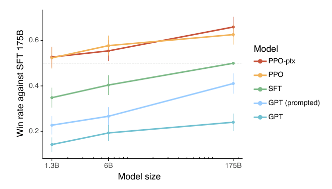

Labelers preferred a 1.3B InstructGPT to 175B GPT-3
Ouyang and colleagues fit a reward model to human comparisons and optimized GPT-3 against it under a KL penalty, an objective whose closed form later made both the reward model and its reinforcement-learning loop optional.
Training language models to follow instructions with human feedback
Read the paperMaking language models bigger does not inherently make them better at following a user's intent. For example, large language models can generate outputs that are untruthful, toxic, or simply not helpful to the user. In other words, these models are not aligned with their users. In this paper, we show an avenue for aligning language models with user intent on a wide range of tasks by fine-tuning with human feedback. Starting with a set of labeler-written prompts and prompts submitted through the OpenAI API, we collect a dataset of labeler demonstrations of the desired model behavior, which we use to fine-tune GPT-3 using supervised learning. We then collect a dataset of rankings of model outputs, which we use to further fine-tune this supervised model using reinforcement learning from human feedback. We call the resulting models InstructGPT. In human evaluations on our prompt distribution, outputs from the 1.3B parameter InstructGPT model are preferred to outputs from the 175B GPT-3, despite having 100x fewer parameters. Moreover, InstructGPT models show improvements in truthfulness and reductions in toxic output generation while having minimal performance regressions on public NLP datasets. Even though InstructGPT still makes simple mistakes, our results show that fine-tuning with human feedback is a promising direction for aligning language models with human intent.1
The gap between predicting text and following instructions
A pretrained language model is trained to do one thing: assign high probability to the next token, given the text so far, over a large corpus scraped from the web. Optimize that objective well and the model becomes an excellent continuation engine, not a model that does what a user asks. Prompt GPT-3 with "Explain the moon landing to a six-year-old" and a faithful next-token predictor may answer with more instructions of the same kind, because a list of similar prompts is a plausible continuation of that string on the internet. Ouyang and colleagues name the problem directly: the language-modeling objective is misaligned with "follow the user's instructions helpfully and safely."1
The paper's target is not a better next-token predictor but a model that is helpful, honest, and harmless in the sense of Askell et al.1 Its answer is to stop hand-specifying that behavior and to learn it from human judgment: collect what people prefer, fit a model of that preference, and optimize GPT-3 against it. The method is three stages, and the case for it is that each stage does something the one before it could not.
How preference becomes a training signal
The pipeline keeps the GPT-3 architecture fixed at every stage and changes only what is optimized.1 Figure 1 lays the three steps out end to end. A supervised policy is trained on demonstrations. A reward model is trained on rankings of that policy's samples. A reinforcement-learning stage then pushes the policy up the reward model's score. This three-stage shape was not new. Stiennon et al. had assembled the same supervised-fine-tuning, reward-model, and PPO-with-KL sequence a year earlier for summarization, with an author set that overlaps InstructGPT's, and shown it beat both human reference summaries and much larger supervised models.2
![A three-column diagram of the method. Step 1 is supervised fine-tuning. A prompt such as 'Explain the moon landing to a 6 year old' is sampled, a labeler writes the desired answer, and the data fine-tunes GPT-3 into an SFT policy. Step 2 is reward-model training. A prompt and several outputs A through D are sampled, a labeler ranks them best to worst, and the ranking trains a reward model. Step 3 is reinforcement learning. A new prompt is sampled, the policy generates an output, the reward model scores it as a reward r sub k, and PPO uses that reward to update the policy in a loop.](instructgpt/asset-1.png)
Stage one is ordinary supervised fine-tuning. Roughly forty contractors write demonstrations of the desired behavior on API and labeler-written prompts, about thirteen thousand of them, and GPT-3 is fine-tuned on that data to produce a policy \pi^{\mathrm{SFT}}.1 This alone makes the model markedly more instruction-shaped. But it is bounded by how many demonstrations people can afford to write, and by a deeper limit: a demonstration teaches one good answer, not which of two answers is better. The next two stages exist to learn from comparisons, which labelers produce faster and more consistently than gold answers.
Fitting a scalar reward to human rankings
The reward model turns a ranking into a number. For a prompt x and completion y it outputs a single scalar r_\theta(x,y), a linear head on a 6B model. To connect that scalar to observed preferences, the paper adopts the Bradley-Terry model, the same preference-to-reward device Christiano et al. introduced for deep reinforcement learning on Atari and simulated robotics: a reward predictor fit to human pairwise choices by cross-entropy, then optimized as the RL reward.3 Under it, the probability a labeler prefers y_w over y_l is the sigmoid of the reward gap, \sigma\!\left(r_\theta(x,y_w) - r_\theta(x,y_l)\right). Training then maximizes the likelihood of the rankings labelers actually gave, the negative log-likelihood below.1
Two details in that expectation carry weight. Each prompt is shown with K sampled completions, between four and nine, and every one of the \binom{K}{2} pairs a ranking induces becomes a training comparison. The paper packs all pairs from one prompt into a single batch element, so a prompt with many comparisons cannot dominate the gradient.1 The reward model also never sees an absolute score. It learns only from differences, exactly what a preference dataset contains, and exactly the property the direct-optimization result will exploit.
What the reinforcement-learning stage maximizes
With a reward model in hand, the third stage optimizes the policy \pi^{\mathrm{RL}}_\phi to score well under it, using PPO, the clipped-surrogate policy-gradient method of Schulman et al. that bounds how far a single update can move the policy.4 Unconstrained, that objective has an obvious failure mode: the policy drifts toward whatever text the reward model happens to rate highest, including text unlike anything the reward model was trained to judge. So the paper charges the policy for moving away from the SFT model with a KL penalty. That leash is inherited too. Ziegler et al. first used a KL penalty to the original policy to fine-tune a pretrained language model, GPT-2, from human preferences.5 The objective InstructGPT maximizes, the one the rest of the argument keeps returning to, is below.1
- r_\theta(x,y)the reward model's scalar score for the completion; the term PPO pushes up.
- \log\frac{\pi^{\mathrm{RL}}_\phi}{\pi^{\mathrm{SFT}}}the per-token log-ratio to the frozen SFT policy; its expectation under the policy is the KL divergence between them.
- \betathe KL-penalty coefficient, the length of the leash: how far the policy may move from SFT before the penalty outweighs any reward gain.
- \mathbb{E}\!\left[\log \pi^{\mathrm{RL}}_\phi(x)\right]the original pretraining log-likelihood, mixed back in so the policy does not forget general language ability.
- \gammathe pretraining-mix coefficient; zero for plain PPO, positive for the PPO-ptx variant.
Read the middle term first. In expectation the log-ratio \log\bigl(\pi^{\mathrm{RL}}_\phi/\pi^{\mathrm{SFT}}\bigr) is the KL divergence \mathbb{D}_{\mathrm{KL}}\!\left[\pi^{\mathrm{RL}}_\phi \,\|\, \pi^{\mathrm{SFT}}\right], so \beta sets how tightly the policy is tied to the model it started from. Loosen it and the policy is free to over-optimize the reward model; tighten it and the policy never improves on SFT. That single coefficient is where the durability of the whole scheme is decided.
The last term is not housekeeping either. During RLHF fine-tuning the policy regresses on public benchmarks such as SQuAD, DROP, HellaSwag, and WMT French-to-English translation, a cost the paper calls an alignment tax. Setting \gamma > 0 mixes the pretraining gradient back in and recovers most of that regression, which is the difference between the plain PPO and PPO-ptx variants and the reason the headline model is PPO-ptx.1
Why a 1.3B model outranks a 175B one
The result the paper is known for is a preference. In human evaluations on OpenAI's own API prompt distribution, outputs from the 1.3B InstructGPT model (the PPO-ptx variant) are preferred to outputs from the 175B GPT-3, a model with roughly a hundred times as many parameters.1 OpenAI's public release states the finding in the same terms and adds that the aligned models make things up less often and are somewhat less toxic.6

The reference point is not a single thing, and the paper's own figure says so. Figure 2 plots win rate against the 175B SFT model, not against GPT-3, and on that axis the 1.3B PPO and PPO-ptx points already clear the 175B raw and prompted GPT curves. The abstract's "preferred to the 175B GPT-3" is a different comparison, and it depends sharply on how the GPT-3 baseline is prompted.
| 175B InstructGPT preferred to… | Win rate |
|---|---|
| plain (un-prompted) 175B GPT-3 | 85 ± 3% |
| few-shot-prompted 175B GPT-3 | 71 ± 4% |
Against a plain GPT-3 the 175B InstructGPT wins 85 ± 3% of the time; against the same model given a few-shot prompt, only 71 ± 4%.1 The "small model beats large model" framing is starkest against the un-prompted baseline, and a well-prompted GPT-3 closes much of the distance. None of this is a capability result. The metric is human preference on a prompt distribution skewed toward open-ended generation, brainstorming, and chat. It is judged by about forty contractors who agree with one another on which completion is better only 72.6 ± 1.5% of the time, and 77.3 ± 1.3% for held-out labelers.1
This procedure aligns the behavior of GPT-3 to the stated preferences of a specific group of people (mostly our labelers and researchers), rather than any broader notion of "human values."1 Ouyang et al., §5.2
One more confound sits inside the metric itself. Preference labeling carries a verbosity bias: judges can prefer longer answers of comparable quality, and automated judges show the effect more strongly than humans.7 InstructGPT completions tend to be longer and more formatted than raw GPT-3 continuations, so some fraction of the win rate may reward style rather than task quality. This bounds what the number means; it is not a measured claim that length drives InstructGPT's win.
The reward model is a proxy, and proxies can be gamed
The \beta-KL term reads like ordinary regularization. Gao, Schulman, and Hilton show the result rests on it. In a synthetic setup a large 6B "gold" reward model stands in for human labels; a smaller proxy reward model is trained on the gold model's labels and then optimized against, either by best-of-n sampling or by PPO. Push the policy further from its starting point, measured by d = \sqrt{\mathbb{D}_{\mathrm{KL}}(\pi \,\|\, \pi_{\mathrm{init}})}, and the proxy score keeps climbing. The true gold score does not: it rises, peaks, and then falls.8 The failure was self-reported before it was quantified. Ziegler et al. had already flagged that their summarization models "may be exploiting the fact that labelers rely on simple heuristics," so the proxy problem was visible in the immediate predecessor and only later given a curve.5
The two regimes even have closed forms: R_{\mathrm{bon}}(d) = d\,(\alpha_{\mathrm{bon}} - \beta_{\mathrm{bon}}\, d) for best-of-n and R_{\mathrm{RL}}(d) = d\,(\alpha_{\mathrm{RL}} - \beta_{\mathrm{RL}} \log d) for RL. Here R is the gold score, and the fitted coefficients vary smoothly with proxy-model size and preference-data size.8 Both curves have a maximum in d. That maximum is Goodhart's law made quantitative: past it, more reward means less of what the reward was meant to stand for. It is precisely what the KL penalty in the RL objective guards against, since \beta caps how far the policy may travel before the proxy stops being trustworthy, and it is why early stopping is not optional.
What the experiment controlled for bounds what it settles. The gold model is itself a model, not a human, so the curves measure how badly a policy over-optimizes a proxy relative to a stronger model. They do not measure how far real human preference can be pushed before it stops tracking what people want. The failure mode is real and its shape is characterized; its magnitude on human labels is not what this synthetic study observed.8
The same optimum without the reinforcement-learning loop
The RL objective needs two machines the KL-regularized target does not obviously require: a trained reward model and a sampling loop. Rafailov and colleagues show that neither is necessary to reach the same optimum. Begin from the objective the RL stage maximizes with the pretraining term dropped, Eq. 2 with \gamma = 0.9
Its maximizer is not something PPO has to search for. For a KL-regularized reward objective the optimal policy has a closed form.9
The partition function Z(x) is intractable, but the derivation never computes it. Instead it inverts the closed form to write the reward in terms of the policy that optimizes it.9
Now substitute this expression into the Bradley-Terry likelihood from the reward-model stage. Because that likelihood depends only on the difference of two rewards on the same prompt, the \beta \log Z(x) term is identical on both sides and cancels. What is left is a loss over preference pairs with no reward model and no sampling from the policy.9
The reward model has not vanished. It has become implicit. The quantity \hat{r}_\theta(x,y) = \beta \log\bigl(\pi_\theta(y\mid x) / \pi_{\mathrm{ref}}(y\mid x)\bigr) is a reward read straight off the policy. That is the sense in which, as the paper's title puts it, the language model is secretly a reward model.9 What DPO removes is the explicit reward model and the RL loop that made InstructGPT's third stage expensive and unstable. What it keeps is the exact objective, the KL leash included.
The scope of DPO's evidence is what the durability read turns on. Deriving the same optimum is a proof; matching InstructGPT's pipeline is a measurement, and DPO's measurements are on sentiment control, summarization, and single-turn dialogue, not full-distribution instruction-following at 175B scale.9 So the after-record supports "the RL loop is optional" directionally, on the strength of the math and off-task experiments, rather than as a head-to-head win at InstructGPT's own task and size.
What the claim was, and what still stands on it
Read as a reviewer, the paper measured one thing well and a second thing not at all. What it measured: human preference, on OpenAI's own prompt distribution, by about forty labelers who agreed with each other roughly three times in four, aligned to those labelers' stated preferences. Within that scope the central result is solid, and it survives the paper's own splits by prompt source and labeler pool.1 What it did not measure is capability, correctness, or any broad notion of human values, and the paper says as much itself.
- The pipeline works: a preference-trained 1.3B policy is ranked above the 175B base, and the win persists across the design's own prompt-source and labeler splits.
- The durable object is the objective, maximize a learned reward under a KL leash to a reference policy, which later work reaches by a different route entirely.
- The metric is preference on a chat-skewed distribution with a known verbosity confound, and the alignment target is explicitly a specific group of labelers, not humanity.
- More reward is not more aligned. The KL leash and early stopping are what the result rests on, because the reward model is a proxy that over-optimizes.
InstructGPT did not introduce this machinery, and reading it as the origin of RLHF misplaces the credit. The preference-to-reward idea is Christiano et al.,3 the KL leash on a pretrained language policy is Ziegler et al.,5 and the full pipeline is Stiennon et al.,2 a year earlier and by an overlapping team. What InstructGPT contributed is assembly and scale: it carried that pipeline from a narrow task to the open-ended API instruction distribution at 175B, added the PPO-ptx pretraining mix, and swept model size. The durable object is still the objective those predecessors built, maximize a learned reward under a KL leash to a reference policy. Over-optimization shows why the KL term is not optional, and DPO shows the same optimum has a closed form that needs neither an explicit reward model nor an RL loop. The claim about the objective is the one that generalizes; the claim that a small model beat a large one stands only with its baseline named. What would change the assessment is narrow: a demonstration that the closed-form and RL routes diverge at instruction-following scale, or that human preference itself over-optimizes the way a proxy model does.189
Sources
- arXiv · Long Ouyang, Jeff Wu, Xu Jiang, et al., "Training language models to follow instructions with human feedback" (2022)
- arXiv · Nisan Stiennon et al., "Learning to summarize from human feedback" (NeurIPS 2020)
- arXiv · Paul Christiano et al., "Deep Reinforcement Learning from Human Preferences" (2017)
- arXiv · John Schulman et al., "Proximal Policy Optimization Algorithms" (2017)
- arXiv · Daniel M. Ziegler et al., "Fine-Tuning Language Models from Human Preferences" (2019)
- OpenAI · "Aligning language models to follow instructions" (research release, 2022)
- arXiv · Saito, Wachi, Wataoka, Akimoto, "Verbosity Bias in Preference Labeling by Large Language Models" (2023)
- arXiv · Leo Gao, John Schulman, Jacob Hilton, "Scaling Laws for Reward Model Overoptimization" (2022)
- arXiv · Rafael Rafailov et al., "Direct Preference Optimization: Your Language Model is Secretly a Reward Model" (2023)